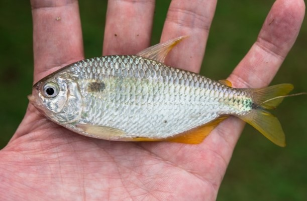
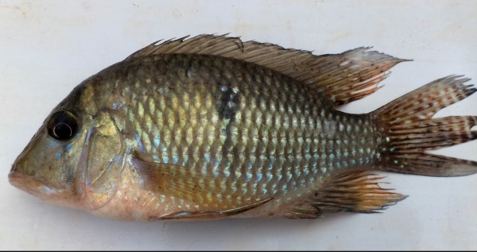
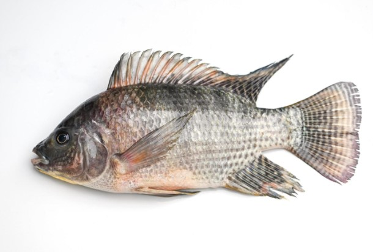
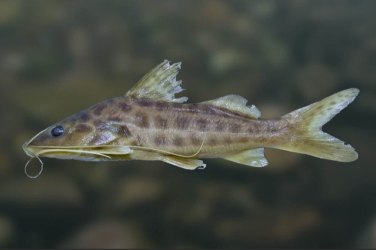
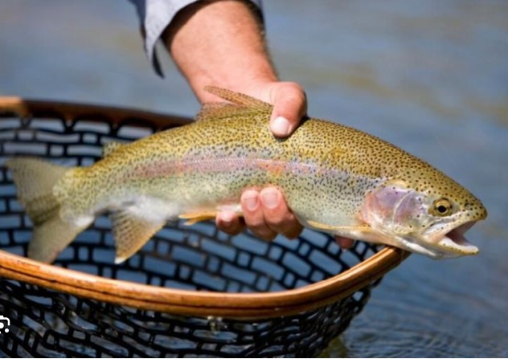
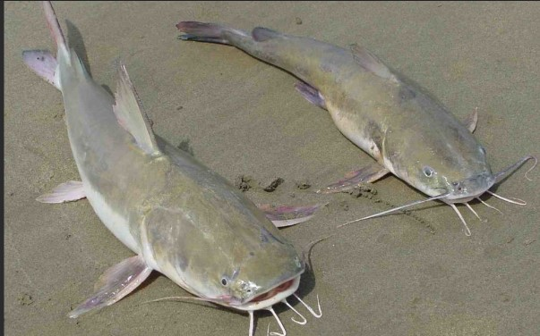
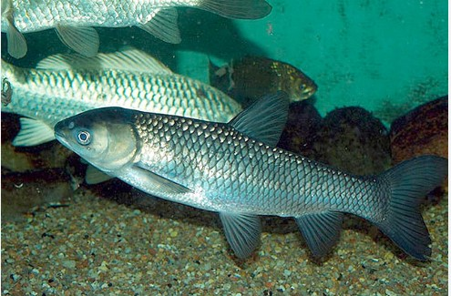

Lambari:
- Identificação: Peixe pequeno, com corpo alongado e coloração prateada ou dourada. Pode ter manchas escuras.
- Iscas: Larvas de tenébrio (bicho-da-farinha), minhocas e pequenos insetos.
- Tamanho de Anzol: Anzol pequeno, geralmente entre 10 e 12.

Cará:
- Identificação: Peixe de tamanho médio, com corpo robusto e escamas grandes. Geralmente tem uma coloração prateada com uma linha lateral escura.
- Iscas: Filés de peixe (como tilápia e cará), minhocas e larvas de insetos.
- Tamanho de Anzol: Anzol médio, entre 6 e 8.

Tilapia:
- Identificação: Peixe de corpo robusto, com escamas grandes e coloração variável, geralmente verde ou prateada.
- Iscas: Filés de peixe, minhocas, larvas de insetos e grãos de milho.
- Tamanho de Anzol: Anzol médio, entre 4 e 6.

Mandi:
- Identificação: Peixe de grande porte, com corpo robusto e cabeça grande. Possui barbilhões e escamas grandes.
- Iscas: Filés de peixe, minhocas e pequenos crustáceos.
- Tamanho de Anzol: Anzol grande, entre 2 e 4.
- Cuidados ao Manusear Peixe:Ao manusear um peixe mandi, é preciso ter extremo cuidado para não tocar nos seus ferrões, que ficam nas nadadeiras dorsal e peitorais. Caso se ferre, deve lavar bem o local com água e sabão, e mergulhá-lo em água morna para reduzir a dor. Inchaço e febre podem ocorrer, mas geralmente não são graves. Se o inchaço e a febre forem fortes, deve procurar um médico.

Truta:
- Identificação: Peixe de corpo alongado, com escamas pequenas e coloração variável, geralmente verde ou prateada com manchas escuras.
- Iscas: Larvas de insetos, minhocas e pequenos peixes.
- Tamanho de Anzol: Anzol pequeno a médio, entre 10 e 12.

Bagre:
- Identificação: Peixe de grande porte, com corpo robusto e cabeça grande. Possui barbilhões e escamas grandes.
- Iscas: Filés de peixe, minhocas e grãos de milho.
- Tamanho de Anzol: Anzol grande, entre 2 e 4.

Carpa capim:
- Identificação: Peixe de grande porte, com corpo alongado e coloração prateada ou dourada.
- Iscas: Vegetais, frutas e grãos.
- Tamanho de Anzol: Anzol grande, entre 2 e 4.

Traíra:
- Identificação: Peixe de tamanho médio, com corpo alongado e coloração prateada ou dourada.
- Iscas: Filés de peixe, minhocas e pequenos crustáceos.
- Tamanho de Anzol: Anzol médio a grande, entre 4 e 6.